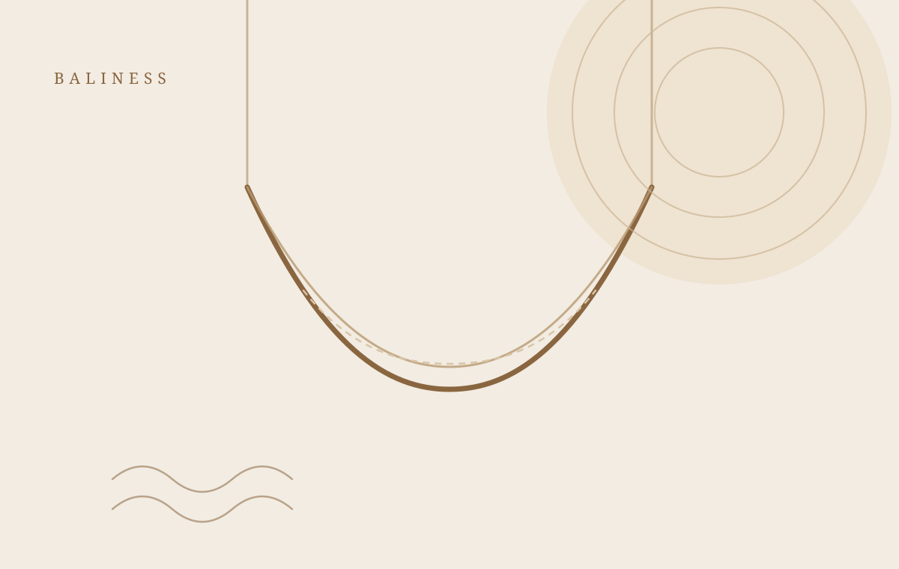

Yongsan · Main
Open
BALINESS Yongsan (Main)
Yongsan, Seoul
Pain Care · Posture Correction · Body Alignment
Yongsan · Itaewon · Hannam
Sling and high-frequency body balance care. Yongsan for pain care, posture correction and body alignment; Itaewon·Hannam for swelling, bloating and diet care, opening mid-February 2027.

About
A one-to-one studio for sling and high-frequency body balance care.
At BALINESS every session is one-to-one. Our main sling program is bodywork in which waves are delivered with the feet; high-frequency care uses a device licensed as a beauty device. Sequence and intensity are adjusted to how your body feels that day.
The studio runs three programs: Sling Body Balance Care, T.S.W, and High-Frequency Body Balance Care using a device licensed as a beauty device. Every session is one-to-one, with intensity and sequence adjusted to your condition that day.
Guests often come with stiff necks and shoulders from long hours at a desk, legs that swell easily, or the feeling that their posture has drifted. Swelling and puffiness care is part of the studio's work.
Today BALINESS runs one studio, in Yongsan. The Itaewon·Hannam studio is being prepared for a mid-February 2027 opening. Address, hours and booking details for each studio are on its own page.
Studios
Yongsan for pain care, posture correction and body alignment; Itaewon·Hannam for swelling, bloating and diet care.
Yongsan · Main
Open
Yongsan, Seoul
Pain Care · Posture Correction · Body Alignment

Itaewon · Hannam
Opening soon
Itaewon · Hannam, Seoul · Opening mid-February 2027
Swelling & Bloating Care · Body & Diet Care
Programs
All sessions are one-to-one and adjusted to how your body feels that day.
Sling-wave care
A one-to-one sling bodywork program in which waves are delivered with the feet. The format and intensity are set in consultation and adjusted to your condition that day.
Using a licensed beauty device
A care session using a high-frequency device licensed as a beauty device. It is not a medical procedure; the area and duration are set in consultation on the day.
A BALINESS program
details to come
One of the programs run alongside sling and high-frequency care. Its format and who it suits are explained in consultation. (Detail page in preparation.)
Adjusted to your body that day
Every program runs one-to-one. Even within the same program, intensity and sequence are adjusted to your condition that day.
Founder & Trust
Founder, BALINESS
Fifteen years as a Taekwondo athlete, then study in alternative medicine at Kyung Hee University's Graduate School of East-West Medical Science. BALINESS instructor training has run 17 cohorts, with more than 100 instructors in Korea and abroad.
In November 2026, introduced sling body balance care to the Vietnam judo national-level team.
Contact
Call the studio line to book or ask a question. Online booking is being prepared.
Nearest station, walking time and parking will be published here once confirmed. Until then, please call and we will guide you.